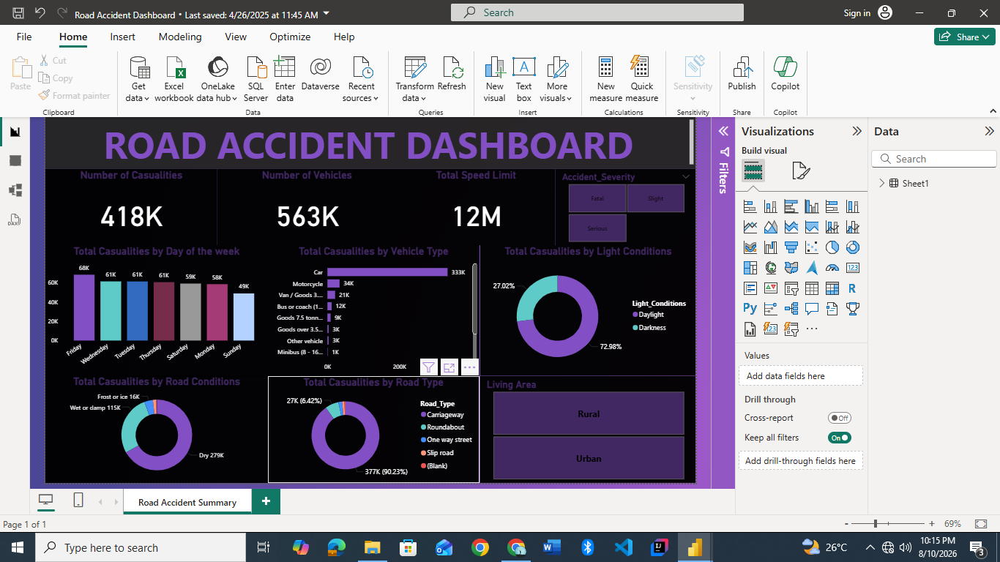
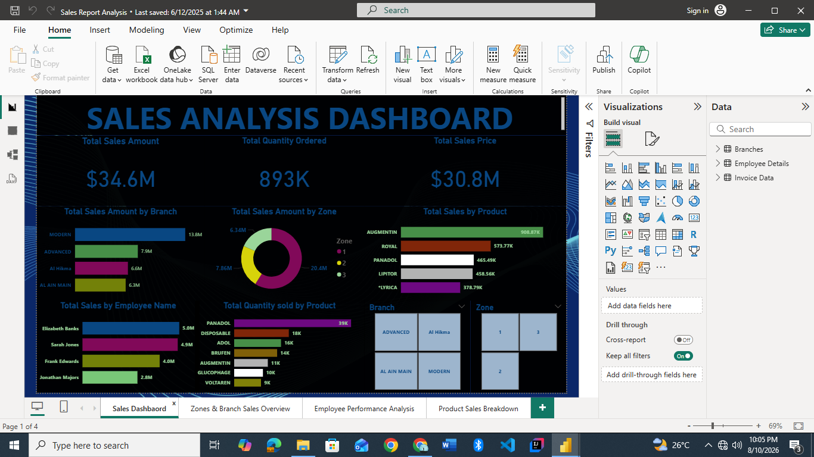
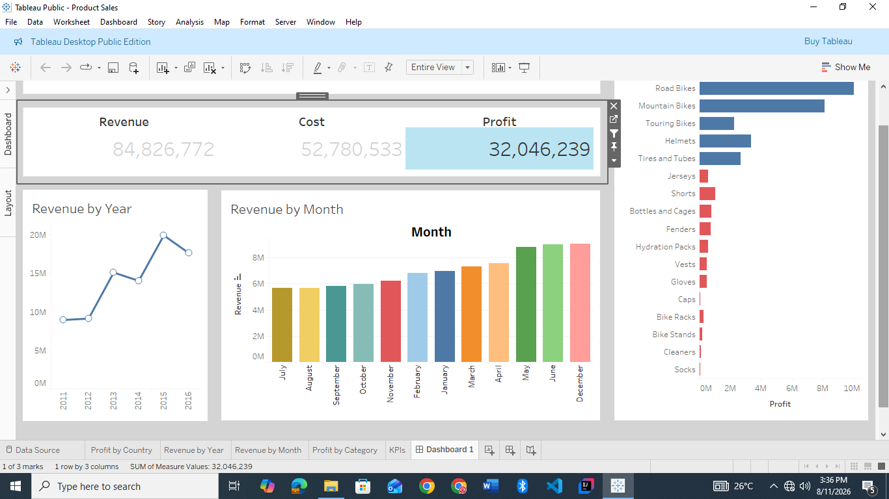
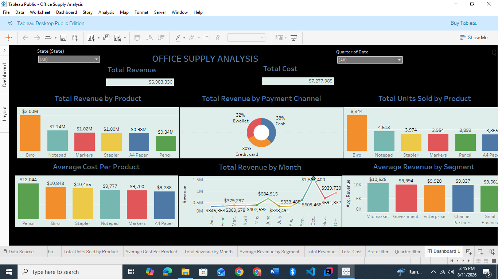
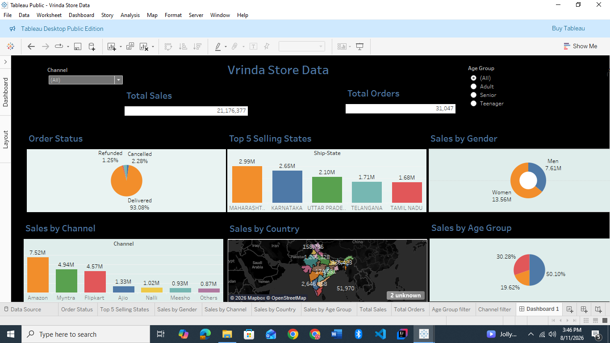
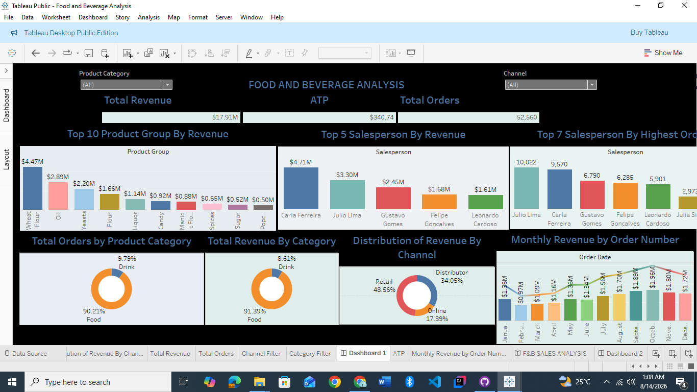
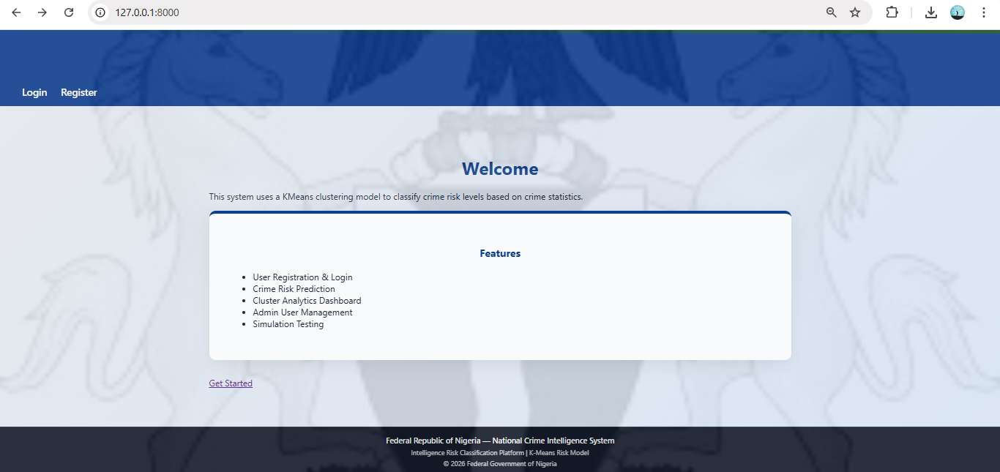
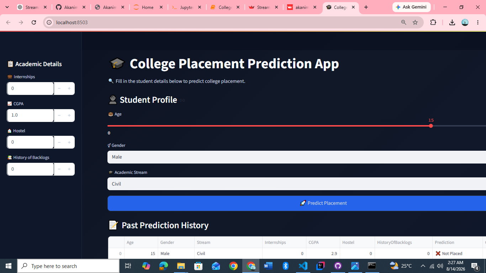

POWER BI01 · BUSINESS INTELLIGENCE
Road Accident Dashboard
Interactive accident analysis covering casualties, vehicles, severity, road conditions, road type, light conditions and living area.
Power BIData VisualizationKPI Analysis
DATA ANALYST · BUSINESS INTELLIGENCE · MACHINE LEARNING
I build analytical dashboards, explore business data, and develop practical machine-learning solutions using Excel, Power BI, Tableau and Python.
data → insight → actionABOUT
I’m Akanimo Eyoma, a Data Analyst and Business Intelligence professional building a growing portfolio across dashboard development, exploratory analysis and machine learning.
My strongest work focuses on turning structured data into interactive reports that make performance, trends and opportunities easier to understand. I’m also developing practical ML applications that extend my analytical toolkit beyond descriptive analytics.
SELECTED WORK
Business Intelligence leads the portfolio, supported by applied machine learning projects.

POWER BI01 · BUSINESS INTELLIGENCE
Interactive accident analysis covering casualties, vehicles, severity, road conditions, road type, light conditions and living area.

POWER BI02 · BUSINESS INTELLIGENCE
Four-page sales report exploring sales performance by branch, zone, employee and product, with interactive filters.

TABLEAU03 · BUSINESS INTELLIGENCE
Sales and profitability analysis with KPIs, revenue trends by year and month, category performance and geographic profitability.

TABLEAU04 · BUSINESS INTELLIGENCE
Dashboard analyzing revenue, cost, product performance, payment channels, units sold, monthly trends and customer segments.

TABLEAU05 · BUSINESS INTELLIGENCE
E-commerce analysis covering orders, channels, customer demographics, geography, order status and top-selling states.

TABLEAU06 · BUSINESS INTELLIGENCE
Interactive analysis of revenue, orders, product categories, product groups, sales channels and salesperson performance.

PYTHON07 · APPLIED MACHINE LEARNING
K-Means clustering system that groups crime patterns across Nigerian states and maps clusters to risk levels in a FastAPI application.

STREAMLIT08 · APPLIED MACHINE LEARNING
Interactive K-Nearest Neighbors application that predicts student placement outcomes using saved model and categorical-encoding artifacts.
TOOLKIT
Power BI · Tableau · DAX · Power Query · KPI design · Dashboard development
Excel · Python · Pandas · NumPy · Exploratory analysis
Scikit-learn · K-Means · KNN · Logistic Regression · Linear Regression · DBSCAN
Streamlit · FastAPI · Flask · Jupyter Notebook · Git/GitHub
JOURNEY
Developing dashboard-driven projects with Excel, Power BI and Tableau while sharpening data storytelling and business analysis.
Building and experimenting with supervised and unsupervised models in Python, then turning selected models into interactive applications.
CONTACT
Connect with me through email, LinkedIn or GitHub.